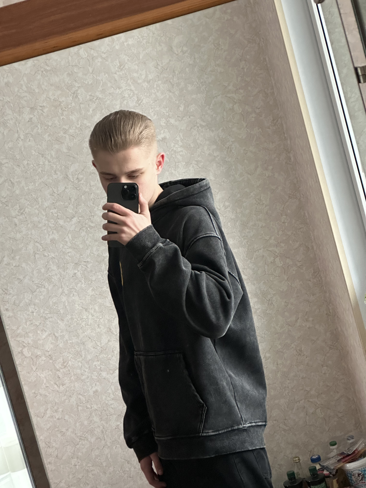

Рад что ты посетил мой сайт! Здесь я расскажу немного о себе.
Мой путь начался ещё полтора года назад на платформе GeekBrains, когда я начал изучать C#, затем python, была даже Java и я нигде не мог найти себя, языки были не особо лёгкими для освоения. После года изучения данных языков мне дали узконаправленный выбор:
Поразмыслив, я понял, что мне интересно экспериментировать с внешним видом, в итоге я решился выбрать Frontend разработку и не пожалел.
Обучение началось с самого простого html, там мы изучали разметку, как добавлять заголовки, текст, аудио на страницу и т.п. С каждой лекцией и семинаром повышался уровень сложности, я справлялся отлично. Далее после изучения базового html я получил сертификат о том, что закончил базовое изучение html.
Затем у нас подключился css, он для того, чтобы стилизовать элементы на странице так, как хочешь ты. Конечно чтобы использовать css, нужно для начала создать "Скелет" страницы.
Это как машина:
Кузов — HTML
Цвет и дизайн — CSS
Двигатель — JavaScript
Начал стилизовать элементы и со временем у меня всё начало получаться, после длительных тренировок с css я сильно продвинулся. Далее начинается адаптивная вёрстка, что это значит спросите вы, простыми словами, адаптивная вёрстка - это метод разработки веб-сайтов, который позволяет им корректно отображаться на различных устройствах и экранах.
То есть изначально вы всё стилизуете под экран компьютера, затем создаёте media запрос и указываете там разрешение, для которого будет применена иная стилистика для корректного отображения и чтобы не уплывали элементы за пределы экрана.
После базового html и css у нас был блок "Продвинутого html + css". То есть html5 и scss, в scss синтаксис такой же, как и в css, только с возможностями препроцессоров. В общем можно создавать переменные, куда можно записывать определённое позиционирование, это сделано просто для удобства, что если вдруг вам нужно будет поменять что то, то вы меняете только одно значение в переменной, а не бегаете по всему сайту на несколько десятков тысяч строк и ищете каждую строку, которую нужно поменять.
После "Продвинутого html + css" мы начали изучать "Основы JavaScript". Там мы изучали массивы, функции и всё прочее, как и обычно в каждом языке. А вот дальше уже началось интересное, мы начали совмещать JavaScript с html и scss.
JavaScript - это язык программирования, который используется для создания интерактивных веб-страниц и приложений. Затем начали изучение "JavaScript про ECMAScript". Там у нас был функциональный JavaScript, ООП и асинхронность. Асинхронность - это способность выполнять задачи в фоновом режиме, не останавливая основной поток. Можем делать запросы к серверу, получать данные, обрабатывать их, много всего.
Сейчас я на стадии обучения "NodeJS", это по сути бэк, только на JavaScript. Осталось буквально 2 месяца и я стану полноценным разработчиком в 17 лет! Планирую писать свои сервисы для простых потребителей.
Помимо программирования у меня есть ещё одно хобби - это мотоциклы. Начал я ездить на них в 2020 году, первые два мотоцикла - питбайки (до 250 кубов).
Недавно приобрёл себе новый эндуро-мотоцикл: PROGASI RACE 300 AIR. Занимаюсь не профессионально, а именно обычные покатушки с друзьями, которые тоже катаются на данной технике, хотел бы попробовать чего то большего, в плане трека, но пока не решился.